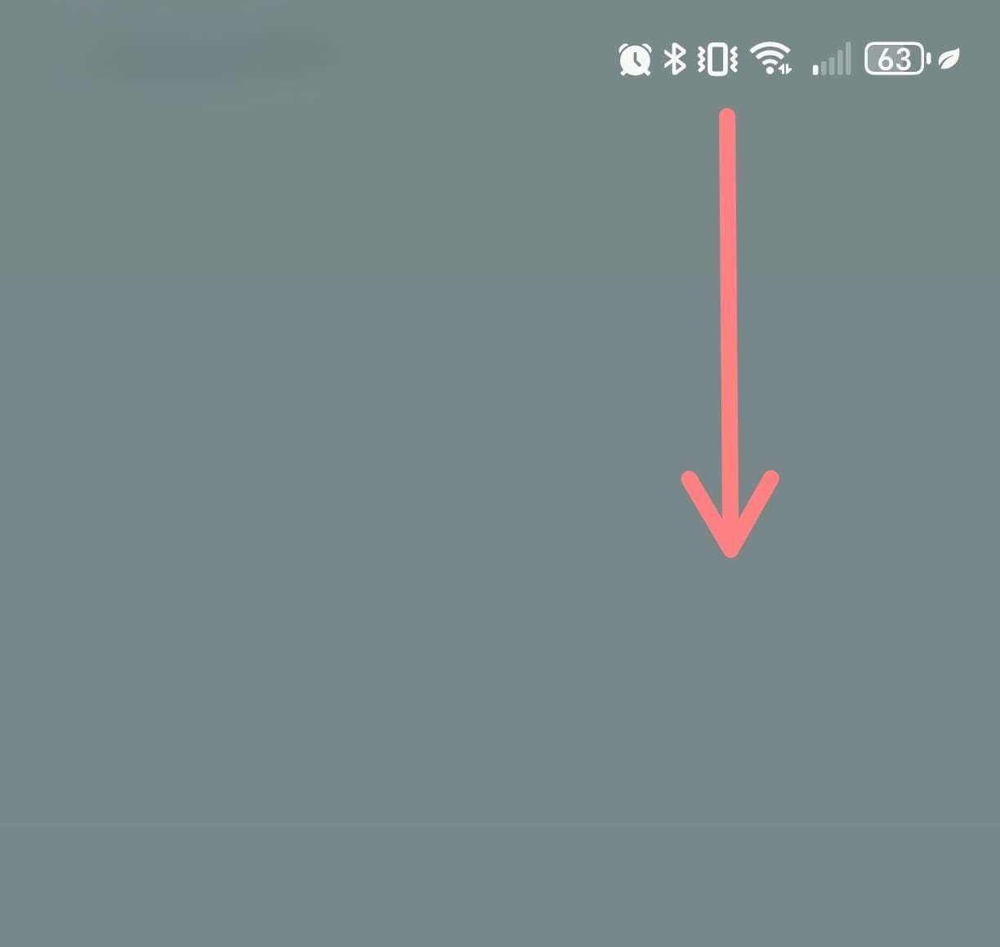
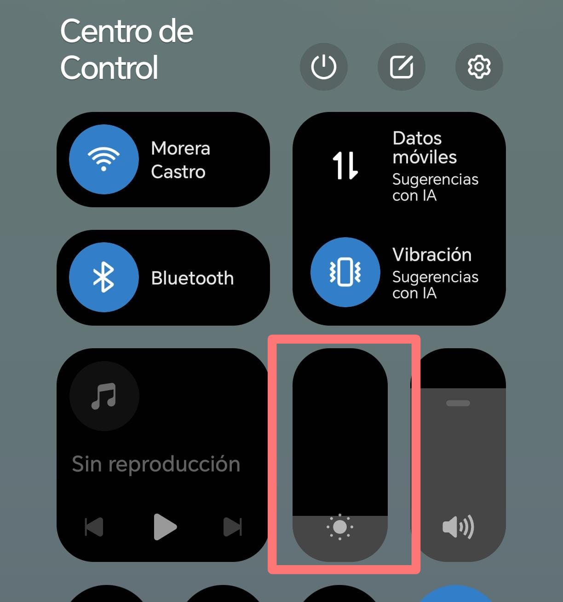
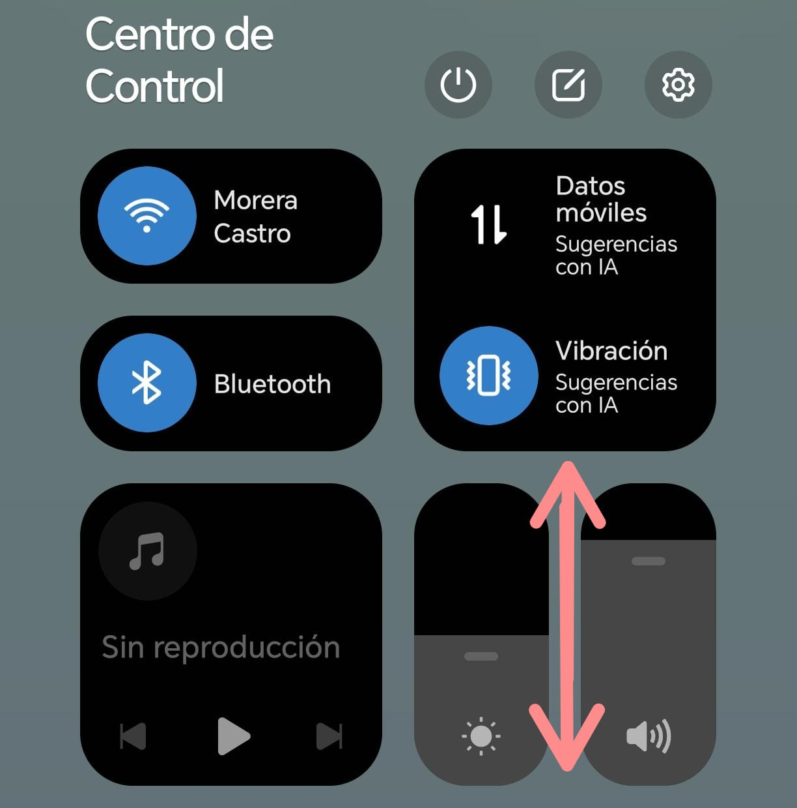

1
Abra el panel rápido
Deslice el dedo desde la parte superior de la pantalla hacia abajo.


2
Busque la barra de brillo
En el panel aparecerá una barra con un ícono de sol.
3
Ajuste el brillo
Deslice la barra hacia la derecha para aumentar el brillo o hacia la izquierda para disminuirlo.

4
Pruebe el brillo
Ajuste el brillo hasta que la pantalla se vea cómoda para sus ojos.